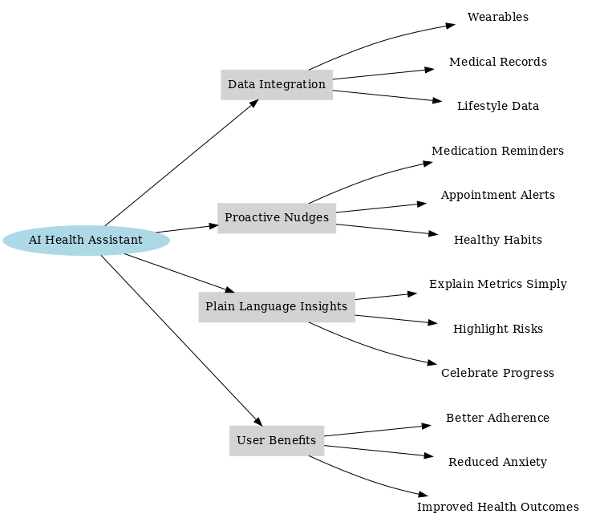
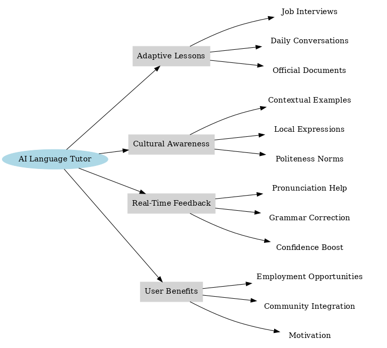

Topic 5: Design Thinking and Ideation#
Design Thinking and Ideation are complementary approaches to innovation. Design Thinking is a human-centered problem-solving methodology that emphasizes empathy, creativity, and experimentation to ensure solutions truly address user needs. It follows iterative stages (empathize, define, ideate, prototype, and test) to reduce risks and align products with real-world demands. Ideation, as a core stage in this process, focuses on generating a wide range of creative ideas without judgment, using techniques like brainstorming, mind mapping, and SCAMPER. Together, they help entrepreneurs build innovative, user-centric, and impactful solutions.
Suggested Readings#
Brown, T. (2009). Change by Design: How Design Thinking Transforms Organizations and Inspires Innovation. HarperBusiness.
Knapp, J. (2016). Sprint: Solving Big Problems and Testing New Ideas in Just Five Days. GV Press.
5.1 Introduction to Design Thinking#
Design Thinking is a user-centric problem-solving methodology that emphasizes empathy, creativity, collaboration, ideation, and experimentation.
Relevance for AI-Based Startups:
Ensures that AI solutions address real human needs.
Balances technological feasibility with user desirability and business viability.
5.2 Principles of Design Thinking#
The principles of design thinking provide a structured, human-centered approach to innovation, guiding entrepreneurs through the stages of empathizing with users, defining problems, ideating solutions, prototyping, and testing to create impactful outcomes:
Empathize#
Understand users’ needs, emotions, and behaviors.
Techniques: interviews, surveys, observation, empathy maps.
Define#
Narrow down insights into a clear problem statement.
Tools: “How Might We” questions, point-of-view statements.
Ideate#
Generate a broad range of ideas without judgment.
Techniques: brainstorming, mind mapping, SCAMPER.
Prototype#
Build low-fidelity models or mockups of solutions.
Examples: wireframes, MVPs, storyboards.
Test#
Collect user feedback to refine solutions.
Methods: usability testing, A/B testing, feedback loops.
5.3 Tools and Applications#
5.3.1 Empathy Maps#
A visual tool to capture what users say, think, do, and feel. Helps teams gain deeper insights into the user’s perspective.
When to Use:
Early product/service development.
Designing new features.
Evaluating existing products.
Empathy Map Examples for AI-Based Startups#
Empathy Map 1: AI Personal Health Companion
Says |
Thinks |
|---|---|
“I don’t have time to constantly track my health data.” |
“If I don’t stay on top of this, my condition will worsen.” |
“Doctors give me advice, but I forget to follow it.” |
“I wish I had personalized insights, not just generic advice.” |
Does |
Feels |
|---|---|
Uses a smartwatch sporadically. |
Guilty for not being more disciplined. |
Googles symptoms late at night. |
Anxious about long-term health outcomes. |
Misses doctor appointments due to schedule conflicts. |
Relieved when someone explains data in simple terms. |
Empathy Map 2: AI-Powered Language Tutor for Immigrants
Says |
Thinks |
|---|---|
“I want to practice English, but I’m embarrassed to make mistakes.” |
“If I improve my English, I’ll find a better job.” |
“Language schools are expensive and not flexible with my job schedule.” |
“AI apps are helpful, but they don’t understand my cultural context.” |
Does |
Feels |
|---|---|
Practices with YouTube or Duolingo at night. |
Isolated in the community. |
Avoids conversations with native speakers. |
Hopeful about building a better future. |
Relies on family to translate official documents. |
Motivated when small progress is recognized. |
Search the web for Emphaty Maps of two situations or products and study their structure following the framework presented previously.
AI Prompt Example:
I am designing an AI-based startup in [industry/problem area].
Help me create an Empathy Map for my target user.
Structure it into the four quadrants:
1. Says – direct quotes or statements from users
2. Thinks – what they might be thinking but not saying
3. Does – their observable actions and behaviors
4. Feels – their emotions, frustrations, or motivations
Return the result in a table with columns: Quadrant | Insights.
5.3.2 Mind Mapping#
Definition: A visual brainstorming tool for organizing ideas around a central concept.
Benefits:
Encourages creativity.
Highlights relationships among ideas.
Supports non-linear thinking.
Mind Map Examples for AI-Based Startups#
Mind Map 1: AI Personal Health Companion

Mind Map 2: AI-Powered Language Tutor for Immigrants

Search the web for Mind Maps of two products or solutions and study their structure following the framework presented previously.
AI Prompt Example:
I am building a mind map for my AI startup idea in [problem area].
Create a hierarchical structure with:
- Central Node: Startup Idea
- First-Level Branches: Target Audience, Problem Hypothesis, Product Hypothesis, AI Features, Competitors, Business Model
- Sub-Branches: Add details, examples, or key questions under each.
Return the mind map as a nested bullet list.
5.3.3 SCAMPER Technique#
A structured method for ideation by modifying existing solutions:
Substitute
Combine
Adapt
Modify
Put to Another Use
Eliminate
Reverse
SCAMPER Examples for AI-Based Startup Solutions#
Case 1: AI Personal Health Companion
S – Substitute
Replace generic reminders with personalized AI nudges (based on daily routines).
C – Combine
Integrate wearables, EHR data, and nutrition apps into one platform.
A – Adapt
Adapt fitness gamification strategies (badges, streaks) to chronic health management.
M – Modify
Modify the user interface to show plain-language explanations (e.g., “Your sugar levels are trending high” instead of “HbA1c deviation”).
P – Put to Other Uses
Use the same system for preventive care in healthy users (early warning, lifestyle coaching).
E – Eliminate
Eliminate the complexity of reading raw medical metrics by offering visual, color-coded dashboards.
R – Reverse
Instead of only tracking what’s wrong, start by celebrating health improvements (reverse the focus from risk to progress).
Case 2: AI-Powered Language Tutor for Immigrants
S – Substitute
Substitute static textbook exercises with AI role-playing conversations (e.g., practice ordering food).
C – Combine
Combine speech recognition with cultural context AI to give tailored corrections.
A – Adapt
Adapt voice assistants (Alexa, Siri) into language practice partners for real-life tasks.
M – Modify
Modify the app to allow offline use for low-connectivity communities.
P – Put to Other Uses
Use the same platform to train job-specific jargon (e.g., healthcare English, construction terms).
E – Eliminate
Eliminate the fear of judgment by creating anonymous AI practice sessions before real conversations.
R – Reverse
Reverse the process by allowing learners to teach the AI their native language (mutual exchange builds confidence).
Search the web for examples of the SCAMPER method.
AI Prompt Example:
I want to apply the SCAMPER technique to my AI startup solution in [problem area].
For each of the 7 steps, suggest at least 2 new ideas or variations:
1. Substitute
2. Combine
3. Adapt
4. Modify
5. Put to Another Use
6. Eliminate
7. Reverse
Return the results in a table with columns: Step | New Ideas.
5.4 The Role of Design Thinking in AI-Based Startups#
Encourages user-centric AI solutions.
Reduces risk through early validation.
Fosters creativity and innovation.
Aligns technology with real-world needs.
CW 5.1: Startup Analysis and Creativity Tools#
Objective To integrate strategic and creative tools — SWOT, Empathy Map, Mind Mapping, and SCAMPER — into a single workflow for analyzing and innovating your AI-based startup. The final deliverable is a Word file containing all prompts used with your personalized assistant (or other LLMs), and the corresponding outputs generated.
1. SWOT Analysis of Your Startup Sample Prompt:
Formulate a SWOT matrix for [Startup Name]. Identify at least three points for each quadrant. Suggest how to leverage strengths and opportunities while mitigating weaknesses and threats.
Deliverable:
- A SWOT table (Strengths, Weaknesses, Opportunities, Threats) with three items per quadrant.
- A short discussion on strategies.
2. Empathy Map Sample Prompt:
Create an Empathy Map for [Startup Name], considering:
- What does the customer see?
- What do they hear?
- What do they think & feel?
- What do they say & do?
- What are their pains?
- What are their gains?”
Deliverable:
- A completed empathy map with each section filled in.
3. Mind Mapping Sample Prompt:
Build a Mind Map for [Startup Name] including:
- Target Audience
- Problem Hypothesis
- Product Hypothesis
- AI Features
- Competitors
- Business Model”
Deliverable:
- A structured mind map diagram (can be text-based or visual).
4. SCAMPER Sample Prompt:
Using the mind map of [Startup Name], apply SCAMPER (Substitute, Combine, Adapt, Modify, Put to another use, Eliminate, Reverse) to explore alternative solutions.”
Deliverable:
- A SCAMPER table showing how each technique could generate new or improved ideas for the startup.
Final Deliverable#
A Word file that includes:
Each prompt used.
The result/output generated for each tool.
Organized sections: SWOT, Empathy Map, Mind Map, SCAMPER.
✅ Add these items to the knowledge base of your Personalized Assistant.